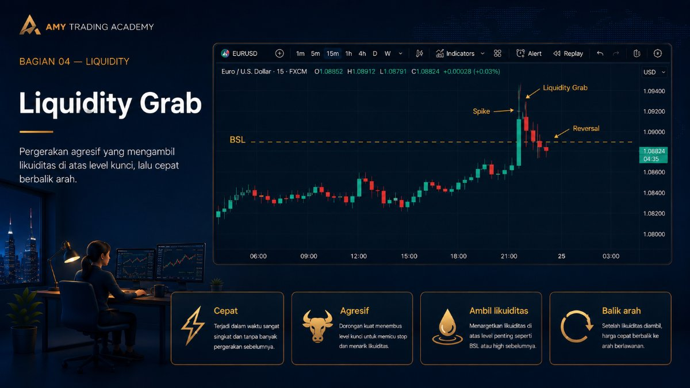
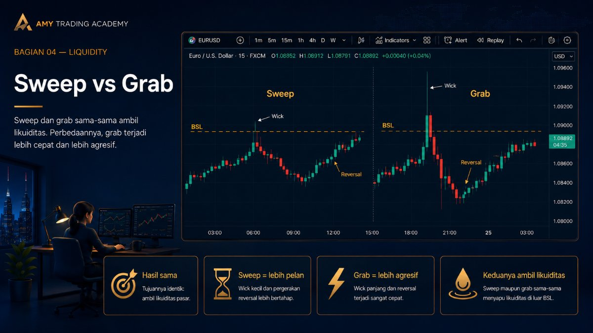
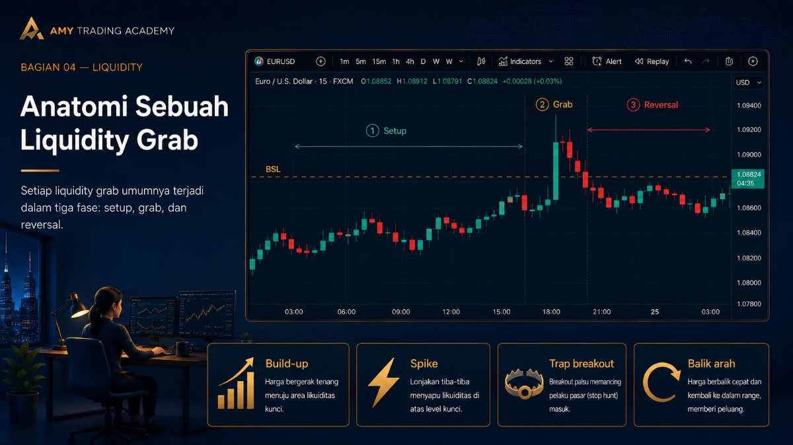
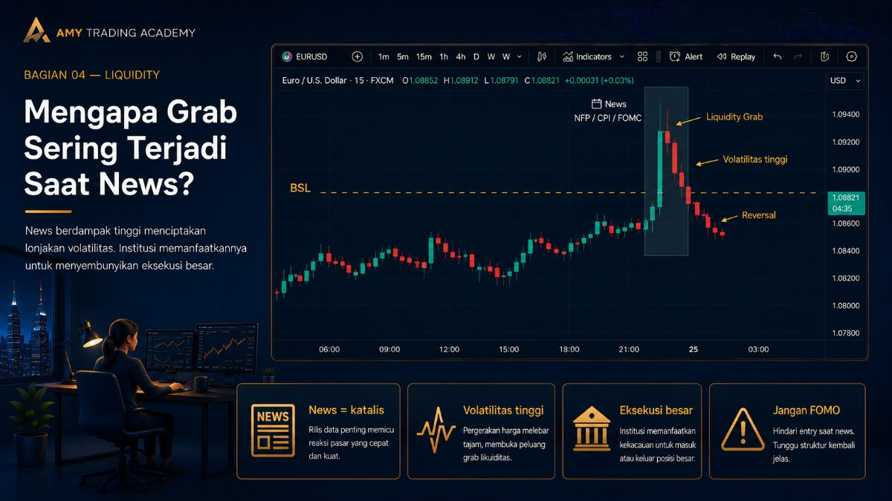
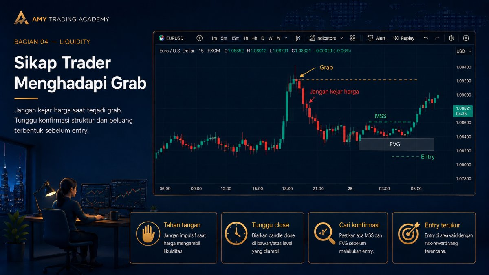

Liquidity Grab

Dalam komunitas trader Smart Money Concepts (SMC), kamu akan sering mendengar istilah Liquidity Grab. Bagi pemula, istilah ini kadang membingungkan karena terdengar mirip dengan Liquidity Sweep yang sudah kita bahas sebelumnya. Pada dasarnya, kedua istilah ini memang menggambarkan fenomena yang sama, namun kata "Grab" (merampas/mencengkeram) memberikan nuansa penekanan pada kecepatan dan agresivitas pergerakan harga tersebut.
Memahami konsep Liquidity Grab akan sangat membantu psikologi tradingmu, terutama agar kamu tidak mudah terkena FOMO (Fear Of Missing Out) saat melihat pergerakan harga yang tiba-tiba melesat kencang.
Sweep vs Grab: Apa Bedanya?

Secara teknis di atas chart, hasil akhirnya sama: harga menembus level likuiditas (seperti Old High atau Equal Lows), mengambil Stop Loss, lalu berbalik arah dan meninggalkan ekor (wick). Namun, perbedaannya ada pada cara harga melakukannya.
Jika Sweep bisa terjadi secara perlahan—harga merayap naik menembus resistance, bertahan di sana selama beberapa candle, lalu perlahan turun—maka Grab adalah pergerakan yang sangat brutal. Harga tiba-tiba melonjak tajam (spike) dalam satu atau dua candle besar, merampas likuiditas dengan paksa, dan detik berikutnya harga sudah runtuh kembali ke tempat asalnya.
Liquidity Grab adalah manuver agresif algoritma institusi untuk mendapatkan order dalam jumlah masif dalam waktu sesingkat mungkin.
Anatomi Sebuah Liquidity Grab

Untuk bisa menghindari jebakan ini, kita harus tahu skenario standar bagaimana Smart Money melakukan Liquidity Grab. Proses ini biasanya terdiri dari tiga fase:
- Fase Setup (Build-up): Market bergerak lambat dan "jinak". Harga membentuk pola-pola klasik yang rapi seperti garis Support yang kuat, atau pola bendera (flag pattern). Tujuannya adalah meyakinkan trader ritel untuk masuk posisi dan meletakkan Stop Loss mereka di area yang mudah ditebak.
- Fase Grab (Manipulasi): Tiba-tiba, tanpa peringatan, muncul candle raksasa yang menembus level Support atau Resistance tersebut. Pergerakan ini terlihat sangat meyakinkan seperti breakout sejati. Trader ritel yang melihat ini akan panik jika posisinya berlawanan, atau malah FOMO dan ikut-ikutan entry (mengejar harga). Di sinilah "perampasan" uang ritel terjadi.
- Fase Reversal (Pembalikan Berdarah): Segera setelah order raksasa institusi terpenuhi dari Stop Loss dan order FOMO ritel, Smart Money langsung membalikkan arah harga. Candle yang tadinya terlihat sangat Bullish/Bearish tiba-tiba ditarik balik dan ditutup menjadi sebuah ekor (wick) panjang. Trader ritel yang terlanjur FOMO kini terjebak dalam posisi rugi (floating minus) yang sangat dalam.
Mengapa Grab Sering Terjadi Saat News?

Liquidity Grab paling sering (dan paling brutal) terjadi pada saat rilis berita ekonomi berkaliber tinggi (High Impact News), seperti Non-Farm Payroll (NFP), data inflasi (CPI), atau pengumuman suku bunga (FOMC).
Trader ritel sering mengira berita buruk akan membuat chart turun, dan berita baik akan membuat chart naik. Namun bagi Smart Money, berita (news) hanyalah katalis (pelumas). Institusi butuh volatilitas tinggi untuk menyembunyikan eksekusi order raksasa mereka. Saat rilis news, spread melebar dan pergerakan menjadi liar.
Algoritma memanfaatkan kepanikan rilis news ini untuk melakukan Liquidity Grab ke level likuiditas yang sudah ditargetkan sejak berhari-hari sebelumnya. Itulah sebabnya saat NFP rilis, harga sering meroket ke atas (mengejar Buy Side Liquidity), dan satu menit kemudian harga terjun bebas ke bawah. Itu bukanlah pergerakan acak, itu adalah Liquidity Grab terencana.
Sikap Trader Menghadapi Grab

Aturan emas dalam menghadapi market yang agresif adalah: Jangan Pernah Mengejar Harga (Don't Chase Price).
Saat kamu melihat candle bergerak liar dan panjang menembus sebuah level penting, tahan tanganmu. Biarkan Smart Money menyelesaikan "perampasan" mereka. Tugas kita adalah menunggu debu mereda (wait for the dust to settle). Setelah harga berbalik arah dan memberikan konfirmasi berupa patahan struktur (Market Structure Shift), barulah kita bisa menumpang masuk ke arah yang sebenarnya dengan risiko yang jauh lebih terukur.
Pahami bahwa Liquidity Grab dirancang secara psikologis untuk memicu emosi ketakutan (fear) dan keserakahan (greed). Dengan menyadari ini, kamu akan bisa menonton pergerakan liar tersebut dengan tenang tanpa harus kehilangan uangmu.